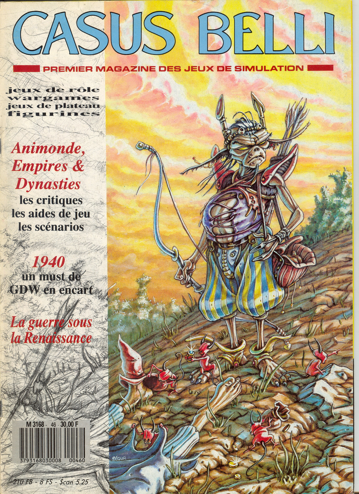

Allez zou, pour ne pas prendre trop de retard, on se plonge dans le CB 46 – juillet-août 1988, avec un Casus qui semble enfin trouver son rythme de périodicité. Magnifique couverture de Thierry Ségur avec ce numéro alors que la saga de Légendes des Contrées Oubliées se limite encore à un seul tome, mais a déjà envoyé une claque au monde de la BD (et est déjà primée) !

C’est l’été et l’actualité est comme le monde, un peu plus en torpeur. En raison de la période, les événements qui se succèdent sont évidemment plus calmes mais la portée de certains d’entre eux n’est pas négligeable car ils mettent fin à des conflits majeurs, en plus de celui d’Afghanistan dont le retrait des troupes soviétiques a débuté. On pourrait donc voir cette année 1988 comme une promesse de paix, mais c’est en fait l’ouverture de nouveaux désordres mondiaux qui nous impactent encore aujourd’hui qui se dessinent. Ainsi pour l’Afghanistan où après le retrait définitif des troupes soviétiques, une guerre civile sanglante entre les anciens seigneurs de guerre afghans viendra prendre la place et n’est toujours pas finie en 2023…
Autre guerre cruelle et inutile qui voit son dénouement à cette période, le conflit Iran – Irak prend fin après un million de victimes, et non sans certaines dernières horreurs : un avion civil iranien qui est abattu par la flotte US qui protège alors les détroits et qui se méprend avec un appareil hostile (depuis le 11 septembre 2001, on sait désormais que même en cas d’identification correcte, un tel appareil pourrait connaître le même destin funeste). Et l’exécution massive de plusieurs milliers d’opposants politiques en Iran suite à un dernier assaut vain des forces irakiennes appuyé par l’organisation des moudjahiddines du peuple iranien, alors que le cessez-le-feu est engagé. Ce conflit consacre donc la victoire de Saddam Hussein, et loin de stabiliser la région, elle va ouvrir une période de troubles que nous connaissons encore tous, en raison des égarements de l’Oncle Sam pour imposer une Pax Americana dans cette poudrière.
Autre poudrière : les Territoires Occupés. Malgré la première Intifada initiée en début d’année 1988, l’OLP et la cause du peuple palestinien s’essoufflent et font la même expérience de la Realpolitik : la Jordanie de désolidarise de la Cisjordanie, et Yasser Arafat doit reconnaître du bout des lèvres l’existence d’Israël et l’abandon de la lutte armée et des actions terroristes, même si cela n’empêche pas le drame du bateau de croisière City of Poros.
Justement aux Etats-Unis, quelles sont les actualités ? Contre toute attente alors que le soccer est un sport encore assez mineur, le pays est désigné pour organiser la Coupe du Monde de Football de 1994 ; les primaires pour l’élection présidentielle de novembre finissent de battre leur plein, pour consacrer Michael Dukakis pour le parti démocrate et George Bush (le père), pour le parti Républicain, successeur désigné de Reagan qui achève donc son 2ème mandat. Et tout aussi politique et retentissant même si les projecteurs sont beaucoup moins dirigés alors dans cette direction, le groupe de rap N.W.A. sort son album Straight Outta Compton qui inaugure le gangsta rap ce même été !
Enfin, du côté du Bloc Soviétique, les réformes continuent sur fond de glasnost et de perestroïka lors du XIXe conférence du Parti communiste de l’Union Soviétique, avec une décentralisation de plus en plus marquée des pouvoirs politiques et économiques.
Malgré ces bonnes et mauvaises nouvelles de par le monde, l’été en France est relativement paisible : le conflit néo-calédonien trouve une voie de résolution sous l’égide du nouveau gouvernement Rocard, et seul le Baron Noir vient troubler la quiétude de la période estivale en faisant joujou en avion au-dessus de Paris, sans qu’on ne sache à ce jour le fin mot de l’histoire (intox ou vraie affaire, au profit de qui dans les deux cas, du pain béni pour un scénario à écrire !).
Et c’est parti maintenant pour nos nouvelles rololudiques : peu de conventions annoncées pour ces mois d’été, et encore moins d’informations sur les conventions passées suite à un bug ou manque de place sur la maquette ? On aura donc un numéro 47 pour le moins fourni qui traitera du FSO, de la GenCon et tutti quanti.
Les sorties de l’été tiennent elles-même sur une page resto-verso, France et Made in Ailleurs inclus. En mémorable : la sortie annoncée de la VF de James Bond (dont le personnage est alors incarné par Timothy Dalton à cette date !), et de Berlin XVIII dans la gamme Universom de Siroz, avant de connaître son destin de JDR complet, et aux multiples éditions ! Au-delà de nos côtes, Games Workshop prépare la 2ème édition de Blood Bowl avec le terrain en Astrogranit ® (ou polystyrène si on enlève le ® ). Space 1889 est annoncé chez Games Workshop mais avec un Designer entre les deux, et comme l’éditeur UK phare aime les homonymes, on parle aussi de la production du Steve Jackson US qui monte qui monte avec GURPS. Dans les productions à venir, la reprise de la licence Conan (rappelons que les opus filmés avec Schwarzy sont encore récents), ou le supplément pour la série littéraire Wild Cards beaucoup plus confidentielle, par un certain George R.R Martin qui n’est lui carrément plus confidentiel.
Dans la suite du Casus précédent, le mag évoque le succès de son sondage CB Echo et des réponses qui pleuvent à n’en plus finir. Il met aussi en valeur son nouveau service minitel et où on apprend aux néophytes d’alors les pseudos, les BAL en ligne et les moteurs de recherche. Casus, c’est déjà demain ! On notera aussi, par le biais d’une petite annonce, que l’apparition du service AKELA est aussi contemporaine (je dis ceci en tant qu’ancien Akelien !!). Le début de l’ère des shitstorms et des débats passionnés sur mon JDR est mieux que le tien, bien avant le forum Casus Officiel puis Non Officiel, peut démarrer !
Le Barbare ne s’est pas calmé depuis le dernier numéro et s’en prend à un article écrit par un certain Freddy Coconut dans le magazine de BD Circus qui raconte n’importe quoi, n’importe comment sur les JDR. C’est avec ce numéro que la rédac’ de Casus commence à s’inquiéter, avec les autres mags, de la réputation fausse et sulfureuse que le JDR commence à véhiculer dans l’Hexagone, en importation de la Panique Morale aux US, et alors que le JDR vivait son Âge d’Or en France… Le Barbare développe d’ailleurs sur le BADD (première mention dans CB ?), pour railler ses initiatives dans le cadre de la NCTV (National Coalition on Television Violence) aux US : il s’amuse dans cette pyschose américaine que Bugs Bunny soit considéré plus violent dans leur barème que Freddy III. S’amuserait-il autant aujourd’hui de certaines polémiques autour de dessins animés du même type ? On en reparlera dans le prochain numéro.
André Foussat est, pour ne pas changer, de mauvaise humeur, et une partie de la presse rôliste en prend (ou continue d’en prendre) pour son grade. Après avoir perdu ses correspondants pour les US et UK, Casus publie un What’s your Game… Von Deutschland, réalisé par un certain… Fabrice Colin, dont il me semble que c’est ici la première signature dans CB (je ne savais pas Herr Kolin germanophile). Ca y parle évidemment de L’œil Noir, bien connu alors avec les éditions VF de Gallimard et Schmidt, et de l’autre JDR phare du pays - Midgard - dont je doute qu’il en soit à la 17ème édition aujourd’hui Outre-Rhin ?…
Les Têtes d’Affiche revues pour ce numéro sont insolites car, en raison des très rares sorties pour cause d’été en France (le pays est fermé en juillet et août), et aux US (les nouveautés attendant la GenCon d’août et Casus ne les a donc pas récupérées), quasi aucun JDR n’est revu ! On trouvera juste 3 produits : Hunter Planet, un JDR australien et médiocre (il fallait aller le chercher celui-ci et même pas fiché sur le GROG si quelqu’un l’a ici – j’en doute mais je ne devrai pas 😄 ), l’écran et ses aides de jeu pour Star Wars en VO, et le scénario Le Charognard pour Légendes de La Table Ronde qui se fait lui-même étriller. Le reste des revues est consacré au livre-jeu mais sur le format novateur BD (Les Crocs d’Ebène aux éditions Glénat), aux wargames (Imperium Romanum II chez WEG, Open Fire, Team Yankee, Partisans pour ASL…), aux jeux de plateau (Rio Ranchos), aux jeux de figurines (Les Seigneurs de la Guerre, le supplément en VF Les Hordes Sauvages pour Warhammer Le Jeu de Bataille qui est encore embryonnaire et qui inaugurera plus tard une large gamme de suppléments, étendant les possibilités d’armées bien au-delà des Hordes Sauvages…).
On bascule ensuite sur les Inspis. Chez Roland Wagner, on trouvera un gros dossier sur Edgar Rice Burroughs, et consacre en roman Le ténébreux de KW Jeter comme livre du bimestre. Décidément, je ne suis suffisamment pas amateur de SF pour savoir si ces références étaient prémonitoires sur des auteurs majeurs, ou sont restées encore plus confidentielles qu’elles ne l’étaient à l’époque. Sur la partie Ciné, c’est Critters II qui est mis en avant et la sortie de de Danger Haute Tension, et pour les BD, il n’y a pas que la série des Légendes des Contrées Oubliées qui fait l’actualité, mais aussi celle d’Aquablue (et dans les catégories plus traditionnelles Les 7 Vies de l’Epervier).
Après ces intermèdes, Casus nous crédite de deux Epreuves du Feu sur des jeux français jamais ré-édités, mais depuis restés en mémoire pour valoriser notre production cocorico : Empires & Dynasties et Animonde. Et surtout, comme avec les numéros de cette époque, de deux scénarios courts pour les découvrir : celui sur Empires & Dynasties est de facture assez classique mais s’inscrit bien dans le décor médiéval-futuriste du jeu ; et celui pour Animonde est lui-même une quête linéaire mais rend également bien l’ambiance du jeu. A découvrir !
Tout ceci est complété par le classique Encart de scénarios qui en propose 4 : AD&D, AdC, Runequest, JRTM. Pour le premier, il s’agit toujours des productions de Denis Beck à Laelith, et toujours repris depuis dans le recueil BBE : pas le meilleur de la série, mais distrayant, il mérite le coup d’œil pour un petit scénar med fan passe-partout. Le Cthulhu n’est pas de @Tristan , mais de Pierre Zaplotny, et se passe dans l’espace, en s’inspirant d’auteurs de SF plutôt que de Lovecraft : il vient surtout vérifier le célèbre adage Tu prends Cthulhu et tu adaptes, puisque l’auteur semble avoir surtout retenu le jeu pour le BRP que pour le Mythe. Le Runequest des sieurs Blayo et Lamidey rend enfin hommage à la VF maintenant disponible du jeu : il propose une expédition certes pas très palpitante mais qui exploite fidèlement le cadre Gloranthien. Je termine avec le morceau de choix, le JRTM d’Anne Vétillard qui est une de mes madeleines. Non pas que j’ai beaucoup joué à JRTM - au contraire - mais Anne avait ce talent pour les scénarios JRTM de les faire démarrer par un extrait sybillin d’un des écrits de Tolkien, et de le décliner pour un scénario. C’est le cas ici, et c’est à découvrir si vous n’avez jamais vraiment lu la production d’Anne, qui mériterait elle-même son recueil à côté de celui de Denis et de Tristan. A transplanter aujourd’hui dans votre Anneau Unique (ou Against the Darkmaster pour les plus pervers !).
Enfin, à propos de Runequest, on trouve juste après un excellent Profession : Maître des Runes des deux mêmes auteurs qui synthétise bien pour l’époque, alors que Glorantha est déjà un univers touffu aux sources éparses, l’ambiance très particulière et la cosmogonie propre de Runequest.
On passe ensuite aux jeux de plateau et wargames avec pour les premiers deux très bonnes critiques de Mai 68 et Suprématie, où on sent pour ce dernier l’attente de la traduction de son supplément Suprématie 2, pour vraiment en exploiter son potentiel et fixer mieux son équilibre. Le wargame est toujours aussi fourni et éclectique avec un dossier sur la Guerre pendant la Renaissance et une critique du jeu Landsknecht, avec des propositions d’amélioration du système, accompagné d’un scénario original ! Jean-Baptiste Dreyfus continue à signer ses très bons articles théoriques, pour ce numéro sur le Principe de Relativité des Efforts et le Principe d’Initiative. Enfin, on trouvera pour ce numéro un wargame complet – 1940 – sur la campagne de Mai-Juin en France, qui est traduit d’un jeu de Franck Chadwick, et proposé intégralement avec cet exemplaire de Casus Belli. Frank Stora le présente et propose déjà son What If qu’il développera des années plus tard dans sa série Et si la France avait continué la Guerre. La rubrique contient aussi une critique d’Onslaught de SPI, sorte de Mémoire 44 avant l’heure.
On termine avec la partie Ludotique, un peu au centre du sondage CB Echo puisque les lecteurs en questionnent l’intérêt par rapport aux magazines spécialisés qui existent déjà à l’époque : Tilt, Génération 4. Casus défend son orientation et ce n’est donc pas un hasard, où après avoir mis en valeur Dungeon Master, c’est L’Arche du Capitaine Blood, d’un certain Philippe Ulrich qui a ici les honneurs de ce numéro.